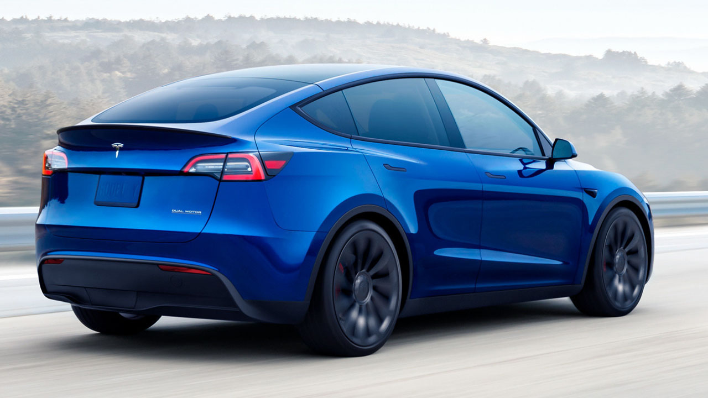
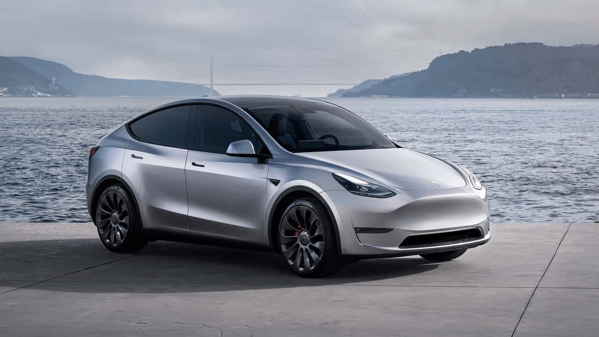

<!DOCTYPE html>
<html lang="en">
<head>
  
  <meta charset="UTF-8">
  <meta http-equiv="X-UA-Compatible" content="IE=edge">
  <meta name="viewport" content="width=device-width, initial-scale=1.0">
  <title>Document</title>
</head>
<body>
  
</body>
</html>
<!DOCTYPE html>
<html>
<head>
  <link rel="icon" type="image/png" href="fav2.png">
 

  <title>Yusuf Söyler | Teknoloji Haberleri</title>
  <link rel="stylesheet" type="text/css" href="style.css">
 
</head>
<body>
  
  <header>
    <h1 class="blog-title"  >Yusuf Söyler | Teknoloji Haberleri🔥</h1>
   
    
    <nav >
      <ul class="menu">
        <li class="menu-baslik" ><a href="blog.html" target="_self" >Anasayfa &nbsp</a></li>
        <li class="menu-baslik"><a href="haberler.html" target="_self">Haberler &nbsp</a></li>
        <li class="menu-baslik"><a href="incelemeler.html" target="_self">İncelemeler &nbsp</a></li>
        <li class="menu-baslik"><a href="iletişim.html" target="_self">İletişim</a></li>
        

      </ul>
    </nav>
  </header>
  
  <div class="container">
    <div class="main-content">
      <article class="post">
        <h2  class="menu-baslik">Yeni Teknoloji Haberleri</h2>
        <p class="post-meta">Yayınlanma Tarihi: 26 Mayıs 2023</p>
        
        <p>
          2023'ün ilk çeyreğinde dünyada en çok satılan otomobiller belli oldu.
           Tesla Model Y, şu an için yılın en çok satılan arabası ancak ikinci sıradaki Toyota Corolla, Model Y'yi yakından takip ediyor.
        </p>
        <br>
        <p>
          Otomotiv sektörü üzerine araştırmalar yürüten JATO Dynamics, geçtiğimiz ay 2022 yılında küresel çapta en çok satılan otomobil modellerini açıklamıştı. 
          Paylaşılan rapor, Japon otomobil devi Toyota'nın liderliğini gözler önüne serdi. Ancak aynı şirketin paylaştığı yeni rapor, Toyota'nın tahtının bu yıl sallanabileceğini gözler önüne seriyor.
           Çünkü 2023'ün ilk çeyreği ile ilgili yapılan araştırma, Tesla Model Y'nin 2023'te şu ana kadar en çok satılan otomobil olduğunu gözler önüne serdi. 
        </p><p>

JATO Dynamics, 53 pazarı kapsayan araştırmasına 31 ülkedeki resmi pazar verilerini ve tahminleri de ekledi.
 Böylelikle toplamda<i> <u>84 ülkeyi kapsayan bir araştırma ortaya çıkmış oldu. Ulaşılan sonuç ise Tesla Model Y'nin zirvede olduğunu ortaya koydu.</i></u>
  Bu önemli bir gelişme çünkü tarihte ilk kez, tam elektrikli bir otomobil dünyanın en çok satılan otomobili unvanını ele geçirmiş durumda.
        </p>
        
      </article>
    </div>
    
    <aside class="sidebar">
      <h3 class="menu-baslik">Popüler Haberler🔥🔥🔥</h3>
      <ul class="sidebar-list">
        <li class="menu-baslik"><a href="haberler.html"  >Elon Musk'ın Beyne Çip Takma Projesi Neuralink</a></li>
        <br>
        <li class="menu-baslik"><a href="haberler.html">Basit Bir Akvaryum Balığı Gibi Görünen 'Lepistes' Aslında Ne?</a></li>
        <br>
        <li class="menu-baslik"><a href="haberler.html">Bitcoin, 2023’te Yüzde 60 Değer Kazandı</a></li>
       
      </ul>
    </aside>
    
    <div class="clearfix"></div>
  </div>
  
  <footer>
    <p>&copy; 2023 Yusuf Söyler. Tüm hakları saklıdır.</p>
  </footer>
</body>
</html>

